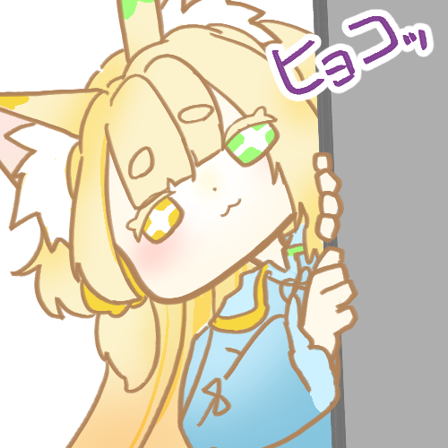

VTUBER / ILLUSTRATION / CREATIVE TOOLS
夜ふかしに、
ひとさじの創作を。
初狐羽鹿 ういこ うか / UIKO UKA
描く。遊ぶ。
お絵描きとゲーム。
深夜のおえかきつね、初狐羽鹿です
個人VTuber / イラスト制作 / 配信者向けツール
A LITTLE FOX, A LATE NIGHT
SCROLL TO EXPLORE ↓

01 / ON AIR & AFTER HOURS
LIVE配信で、ひとやすみ。
お絵描きも、ゲームも。
配信の予定は各チャンネルでご確認ください。
02 / FROM THE SKETCHBOOK
WORKS

03 / A PIECE OF THE NIGHT